01白鹤的故事 The Story of the Siberian Crane
白鹤（Siberian Crane, Leucogeranus leucogeranus）是对浅水湿地依赖最强的鹤类。看一段它们南飞的影像，再读资料卡片。
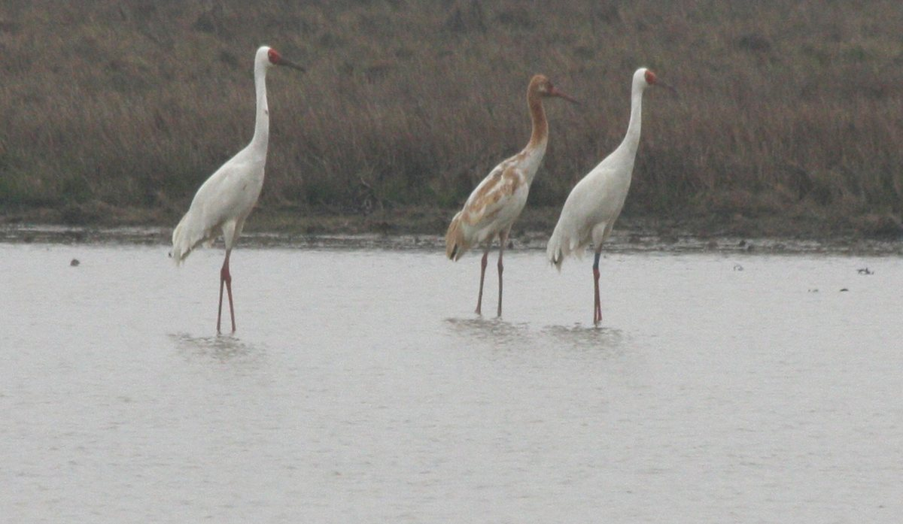
~98% winter at Poyang
one-way migration
wintering waterbirds
Critically Endangered（2018 评估，至今未降级）
📊 "98%" 是 CMS 与鄱阳湖官方长期沿用的经典口径；随着调查范围扩大，2024 年《生态学报》研究更新为约 85.7% 的东部种群在鄱阳湖越冬。两个口径都说明：这片湖几乎是这个物种的"全部家当"。
🧠 头脑风暴 · Brainstorm（先自己划线、作答，再点核对）
- 鄱阳湖为什么适合白鹤越冬？（在资料卡片中划出相关信息）
- 白鹤是濒危动物吗？
- 我们应该如何保护它？
① 与长江自然连通的鄱阳湖提供了理想栖息地；冬季水位消退后，湖底泥滩渐次长出白鹤喜食的沉水植物块茎（苦草冬芽）。The Yangtze-connected lake creates shallow waters and mudflats; as water recedes in winter, Vallisneria tubers — the cranes' favorite food — sprout on the mudflats.
② 是。几乎整个东部种群冬季聚集于鄱阳湖一处，人为活动与拟建水利设施都可能带来"灭顶之灾"；IUCN 红色名录评估为极危（CR）。
③ 带着这个问题学完本课——第 ⑤⑥ 模块我们会辩论"要不要建大坝"、怎样修复湿地。
🐦 跨学科小练：鸟为什么能飞？
第 1 题：下列特征中，支持"鸟适于飞行"的有哪些？（多选）
第 2 题：下列四种动物中，与鸟的生殖方式（产羊膜卵、有坚韧卵壳）最接近的是？
02鄱阳湖的"呼吸"：夏涨冬落 The Lake That Breathes · Seasonal Water Level
鄱阳湖是开放型通江湖泊：修水、赣江、抚河、信江、饶河五河入湖，经调蓄后由湖口注入长江。
长江洪水期，江水倒灌入湖、削减洪峰；枯水期，湖水补给长江。点击切换冬夏，观察湖面、泥滩与白鹤栖息地的变化。
Poyang Lake is freely connected to the Yangtze: it swallows floodwater in summer and feeds the river in winter. Toggle the seasons to watch the lake "breathe".
📊 鄱阳湖地区：月降水量柱状图 + 气温曲线
把鼠标移到柱子上看数值；蓝色为雨季（3–6 月），琥珀色为枯水季（9–12 月）。数据：南昌多年气候平均（天气后报）。
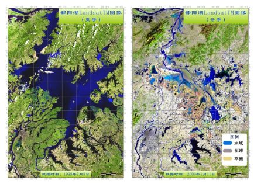
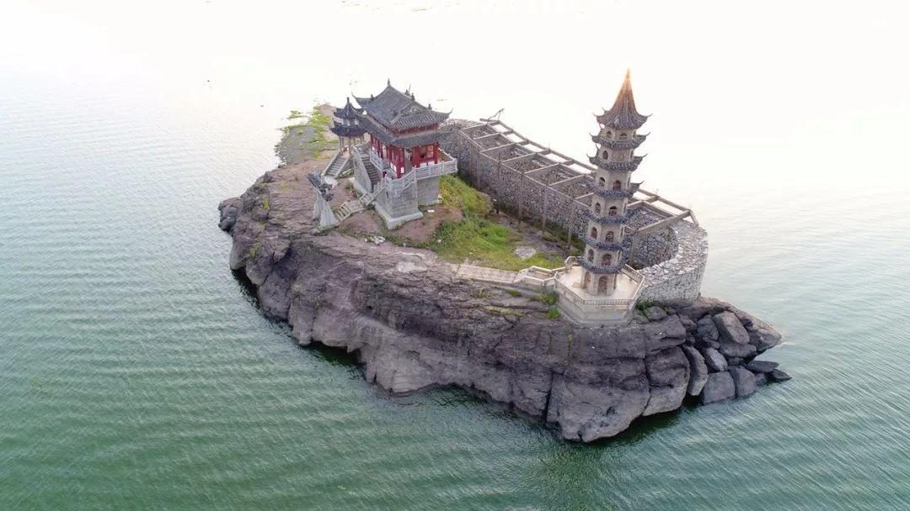
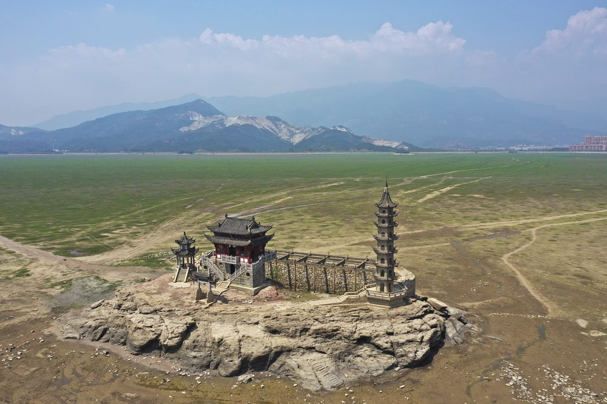
江西九江庐山市落星墩：同一地点，夏冬两季（课件原图）
✏️ 填一填：气候 → 降水 → 水位 → 湿地（点击词库填入空格）
03重点①：水位怎样决定白鹤的命运？ Focus 1 · Water Level & Crane Population
"高水位对白鹤等物种具有灭顶之灾"——这是危言耸听吗？请像科学家一样阅读论文片段，划出因果链上的每个环节。
Read the excerpt like a scientist: trace the cause-and-effect chain from high water to the crane population crash.
研究发现，不利的水位会显著降低白鹤食物资源苦草茎块（冬芽）密度。在食物资源正常的年份，白鹤会依据最优觅食理论选择浅水湖泊和泥滩为觅食地，采食苦草冬芽为主要食物。但在恶劣年份，异常的水位波动会迫使白鹤改变栖息地和食性。
在发芽期，水下光照是影响苦草生长最主要的环境因子之一。例如在高水位期，1998 和 1999 年最高水位均超过 21.0 m，破坏了鄱阳湖国家级保护区大部分苦草斑块，进而反映在 2000–2001 年越冬季鄱阳湖白鹤的最低种群记录：382 只。
研究建议的最优水位：高水位时期 低于 17.4 m；低水位（枯水）时期 8.2–8.8 m——这样的水位基本可以满足整个水鸟群落的要求。
💡 点击文中黄色高亮句可查看批注；全部点过后再看下方因果链。
🔗 因果链：按顺序点亮 · Build the causal chain
📈 30 年越冬种群数量：把鼠标移到折线上
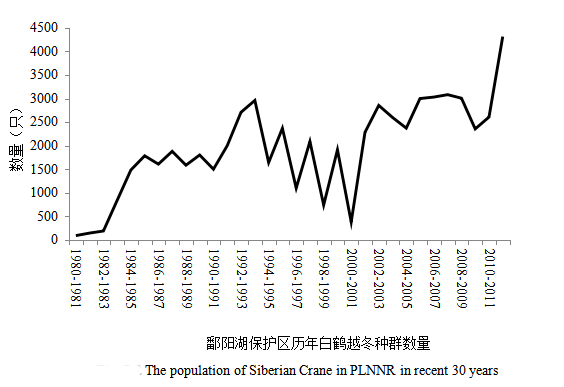
The line is volatile, not smooth: deep valleys follow flood years. The population has since recovered to ~7,000 birds (2024), yet the species remains Critically Endangered.
🎯 思考：为什么"洪水年"的影响在 2–3 年后才完全显现？（提示：苦草是多年生沉水植物，冬芽形成与斑块恢复需要时间。）
04重点②：白鹤"食谱"变了，说明环境变了？ Focus 2 · Diet Shift Reveals Environmental Change
如果白鹤开始离开泥滩、飞到农田里找吃的，这背后的环境发生了什么？读第二段论文，从粪便分析数据里找证据。
If cranes leave the mudflats to feed in farmland, what changed in their environment? Follow the droppings.
2017 年 11 月至 2018 年 4 月采集的 70 份白鹤粪便样品分析表明：白鹤的食物来源于 10 科 15 种植物，其中水稻（Oryza sativa）、莲藕（Nelumbo nucifera）和紫云英（Astragalus sinicus）为最主要的食物，这 3 种植物在检测到的食物中的相对密度分别为 34.34%、22.99% 和 10.61%，而白鹤的传统食物苦草冬芽所占比例极低（2.05%）。由此可见，白鹤的食物组成已经发生变化，农作物已成为白鹤的重要食物来源。
🥢 2017–18 越冬季：粪便里的食谱（相对密度）
点击按钮让数据"长"出来
其余为其他 11 种植物（合计约 30%）。数据来源：侯谨谨等（2019），《动物学杂志》54(1):15–21（70 份粪便样品，10 科 15 种植物），经课件材料四.2 摘录。
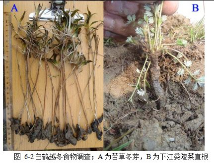
🤔 证据 → 推断：逐条讨论（点击展开）
- 水位节律紊乱：异常高水位/枯水过早，苦草发芽和冬芽形成失败；
- 采砂与湖床扰动：破坏沉水植被斑块；
- 干旱与枯水期延长：泥滩过早干涸硬化，冬芽难以挖掘；
- 水体富营养化、渔业活动等也会压缩沉水植物。
- 人为干扰强：机械收割、车辆、人流、家犬，白鹤频繁惊飞、耗能增加；
- 食物不稳定：收割方式改变（机收留茬少）、翻耕、除草剂使用，"候鸟食堂"可能突然消失；
- 潜在风险：农药/重金属残留、与输电线路碰撞、误食塑料；
- 生态依赖：整个物种的生存从自然湿地"外包"给农业生产，极其脆弱。
✅ 对因保护候鸟造成损失的农户给予生态补偿；
✅ 恢复沉水植被（苦草）——根本上修复自然食谱；
✅ 科学调控水位（呼应模块③的最优水位窗口）。
📚 同行评议研究互证：Hou 等（2021）以粪便 DNA 元条形码方法，同样记录到白鹤食性从苦草冬芽转向水稻、莲藕等人工生境食物，且年际间随水文条件波动（Frontiers in Zoology, 2021）。课件中 34.34%/22.99%/10.61%/2.05% 为课件材料数据（采样年份与方法不同），与该文献结论一致。
05大坝之辩：要不要建鄱阳湖水利枢纽？ Debate · To Dam or Not to Dam
近二十年，江西省推动在鄱阳湖入江水道建设"鄱阳湖水利枢纽"（俗称"鄱阳湖大坝"，实为开放式闸坝）。它把前四个模块的所有矛盾集中到了一个决策上。先整理影响因素，再听双方论点，最后你来投票。
All the tensions so far converge on one decision: the proposed Poyang Lake water hub. Classify the factors, weigh both sides, then cast your vote.
🧩 第一步：影响白鹤越冬种群数量与分布的因素
点击每个因素卡片进行归类：自然因素（再点一次变为人为因素，第三次取消），全部分完后点"核对答案"。
⚖️ 第二步：听双方怎么说（基于公开报道与环评文件）
🏗️ 支持方：建闸是"救命水"
- 枯水危机越来越严重：2022 年星子站出现有记录以来最低水位 4.60 m；2023 年 7 月 20 日即进入枯水期，为历史最早；监测显示湖区湿地植被缩减超 50%，沉水植物种子库萎缩 90% 以上。
- 保供水、抗干旱：枯水期拉长影响沿湖约 359 万城镇居民与 44 万农村居民的饮水和灌溉。
- "调枯不控洪"设计：闸轴线长约 2994 m，4–8 月闸门全开、江湖自然连通；9 月至次年 3 月适度拦水，维持枯水期水位，稳住泥滩与候鸟觅食地。
- 水位可人工调度：支持者认为可以按"最优水位窗口"（呼应模块③：丰水期 <17.4 m、枯水期 8.2–8.8 m）精细调控，比听天由命更能保护候鸟。
🐟 反对方：节律本身就是湿地
- "夏涨冬落"就是湿地生态本身：泥滩、草洲、苦草、候鸟，都是水位自然涨落的产物；白鹤依赖的不是"稳定的水位"，而是千万年形成的季节节律。
- 江湖连通被切断：世界自然基金会（WWF）两度公开质疑：闸坝阻碍洄游鱼类通道，影响长江江豚的栖息地与食物网。
- 高水位风险可能重演：若秋季蓄水偏多、水位偏高，淹没苦草斑块，可能复制 1998 年后"食物崩溃 → 种群骤降（382 只）"的教训。
- 连工程自己的环评都算出了代价：环评报告模拟显示，丰水年运行后白鹤栖息地将缩减约 33.01%、东方白鹳约 65.30%、鸻鹬类约 70.01%；环评第二次公示收到公众反馈邮件 5.3 万余封，争议之大可见一斑。
- 2017 年 15 位院士、专家公开建言慎重决策：应优先评估更温和的替代方案——流域水资源管理、采砂管控、沉水植被修复、退田还湖。
📅 工程时间线（据官方文件与权威媒体报道）
- 2002 年前后：鄱阳湖水利枢纽概念提出。
- 2008 年：江西提出"调枯不控洪"新思路（汛期不建坝挡水，只在枯水期适度拦水）。
- 2016 年：WWF 公开四点质疑；2017 年：15 名院士、专家向有关部门建言慎重决策。
- 2022 年 5 月：工程环境影响评价第二次信息公示，征求公众意见。
- 2025 年 8 月：工程进入可行性研究报告报批阶段。
- 2026 年 1 月：江西省政府工作报告提出"力争开工建设鄱阳湖水利枢纽"；3 月列入江西省 486 项省重点项目"计划新开工"名单。
- 截至 2026 年 8 月：工程仍未正式开工——这场争论还在继续，你们的课堂投票，也是真实公共决策的一部分。
🗳️ 第三步：班级投票与立场陈述
如果你来决策，你支持现在开工建设鄱阳湖水利枢纽吗？
Cast your vote, then defend it with evidence.
很好——科学家与决策者之间至今也没有标准答案。这个辩题真正训练的是三件事：
① 你的每个论点背后有没有证据（监测数据、论文、环评文件），而不是"我觉得"？
② 你是否诚实面对了对方最强的那条理由？
③ 有没有第三条路？例如：先做小范围生态调度试验、给蓄水水位设死上限（17.4 m）、同步恢复沉水植被、严控采砂与围垦，再评估是否需要工程。
💡 好的决策不是"选边"，而是在不确定中选择可逆、可监测、可修正的方案。
来源：中国新闻网（2025-08，可研报批）；江西省政府 2026 年工作报告；澎湃新闻（2022 环评公示报道）；WWF 四点质疑（中国青年网转）；人民政协网（2017，院士专家建言）。
06湿地有什么用？怎样才算"真修复"？ Wetland Services · Real vs. Fake Restoration
湿地与森林、海洋并称地球三大生态系统。先盘点湿地的生态系统服务，再对比一正一反两个真实修复案例。
Wetlands deliver services no engineered system can replicate — yet not every "restoration" project restores ecology.
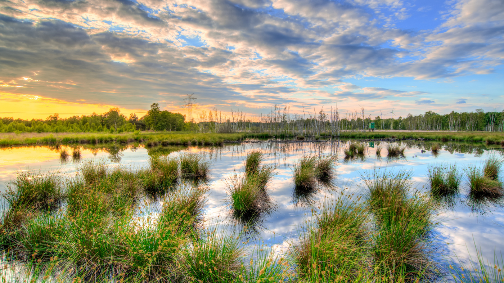
汛期蓄纳洪水、削减洪峰；枯水期补给河流与地下水，"削峰补枯"——鄱阳湖就是长江的天然防洪阀。
湿地被称为"地球之肾"：植被、土壤和微生物共同沉降、吸收、降解污染物。
像海绵一样滞留降水、补给地下水，是流域的天然水库。
增加湿度、调节气温；湿地碳储量约占全球陆地碳储量的三分之一以上。
全球候鸟迁徙路线上的"加油站"与繁育场：鄱阳湖每年越冬水鸟 35 万只以上。
红树林、盐沼、海草床单位面积固碳能力可达陆地森林的数倍，是地球上最密集的碳汇之一。
✅ 正面案例：江苏盐城条子泥"720 亩高潮位栖息地"
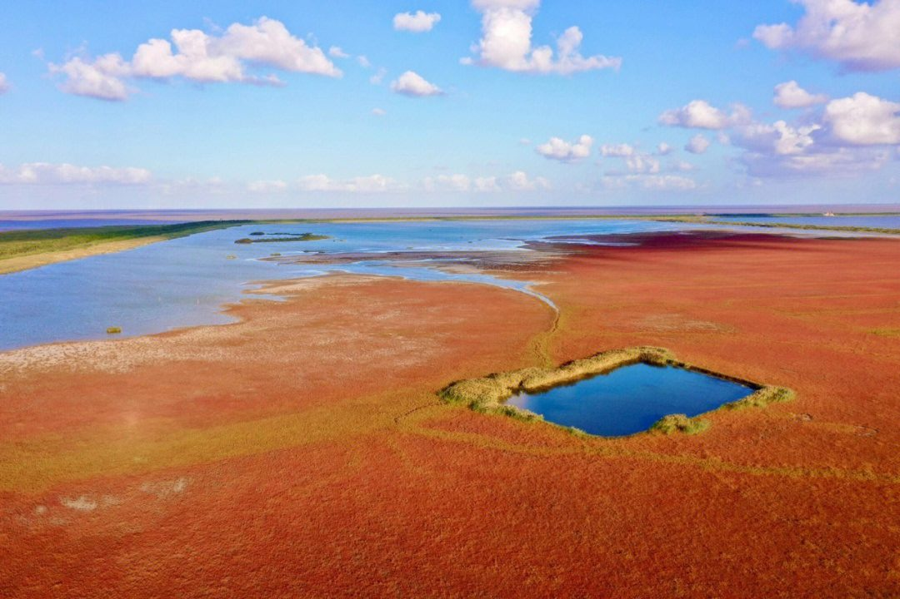
修复措施（2020 年）：把 720 亩废弃鱼塘改造为"高潮位栖息地"——破除部分硬质堤岸、用闸门按鸟的需求控制水位、恢复裸滩与浅水区、封闭管理减少人为干扰。
效果数据：
- 建成当年秋季，单日记录水鸟 5.8 万只；2024 年单日最高达 18.8 万只；
- 极危物种小青脚鹬：区域记录从约 1150 只（2020）增至 2440 只（2024），2025 年单次记录 2694 只，刷新全球纪录；
- 全球成鸟仅约 443 只的勺嘴鹬，超过半数在此停歇，单次最高记录 200 余只；
- 区域累计记录鸟类 420 种（国家一级 23 种、二级 74 种）；入选联合国 COP15 生物多样性"100+"全球案例，被称为水鸟的"五星级宾馆"。
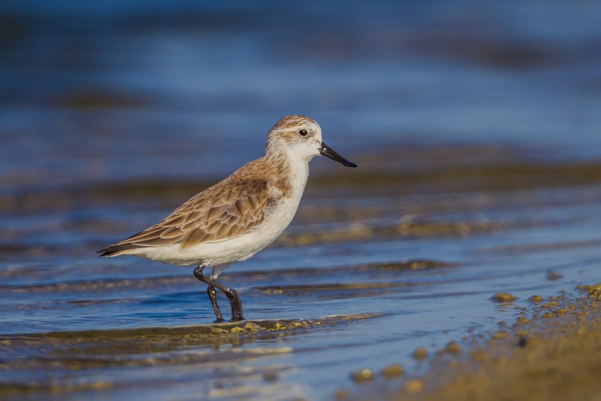
❌ 反面案例：连云港"蓝色海湾"——临洪河口湿地
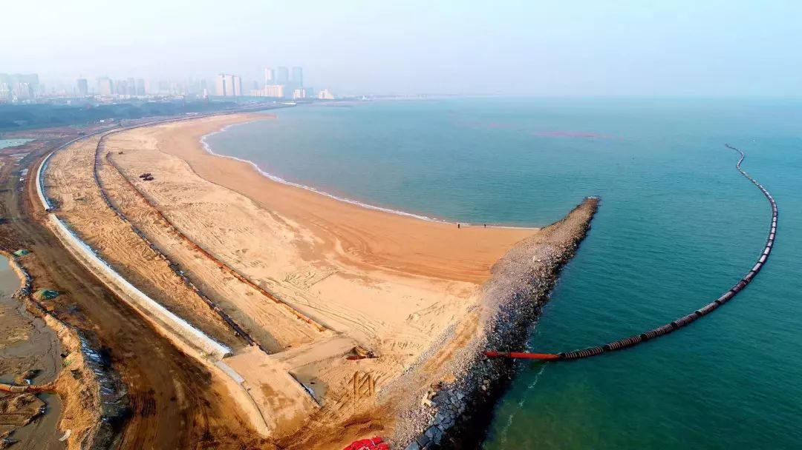
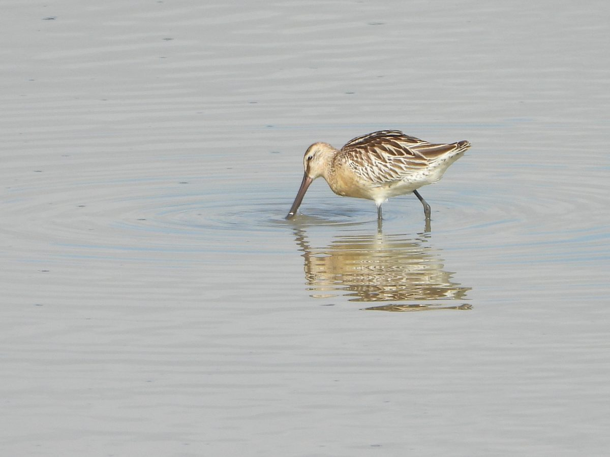
- 2017 年："蓝色海湾"项目构想提出；
- 2019 年 3 月：工程开工；4 月获中央财政 3 亿元支持；
- 2021 年 4 月：环保组织"自然之友"提起环境公益诉讼；
- 2021 年底—2022 年初：工程停工；
- 2023 年 2 月：中央生态环境保护督察将其列入整改清单；
- 2024 年 1 月：南京市中级人民法院一审判决：工程停建，环评单位承担连带责任；自然之友已提起上诉，截至本页制作时二审尚未宣判。
- 考核指标错位：考核的是"投资完成额、景观面积、绿化率"，而不是鸟类种群、潮间带面积、自然岸线率、底栖生物量这些真正的生态指标。
- 重景观、轻生态：把生态修复做成"滨海公园"——好看是给人看的，不是给鸟用的。
- 围填海的利益驱动：岸线整治带动旅游与地产开发，"修复"在一定程度上成了围填海合法化的通道。
- 环评与科学评估失守：前期环评没有真正约束工程方案（事后环评单位被判连带责任，说明评估环节形同虚设）。
- 栖息地知识缺位：决策者不了解迁徙水鸟"潮间带 = 食堂"的生态需求，把"有水有绿化"等同于"生态好"。
07如果你去湿地，你会研究什么？ How to Do Research in a Wetland
最后一个任务：把今天学过的思路变成一套研究方法。先看科学研究的一般流程，再看一个本校学长学姐做出来的真实案例。
Design your own wetland study — then see how a real student team did it end to end.
🧭 科学探究的一般流程 · Scientific inquiry workflow
观察现象、提出问题 Observation & Question
"为什么这片草洲白鹤多、那片少？""不同湿地的土壤生物一样吗？"——问题要具体、可测量。
提出假设 Hypothesis
"水位高低影响苦草生物量，进而影响白鹤分布"；"人工湿地的土壤微生物多样性低于自然湿地"。假设必须能被数据检验。
选择样线、样方与对照 Transects · Quadrats · Controls
动物调查常用样线法（沿固定路线记录种类、数量）；植物/底栖生物常用样方法（随机设若干固定大小的样方计数）；研究影响必须设对照组（不同生境、修复前 vs 修复后）。
采样与测量 Sampling & Measurement
水样、土壤样、粪便样、影像记录；使用传感器、显微镜、宏基因组测序等工具；记录时间、地点、环境条件（水位、气温、pH 等）。
数据分析 Data Analysis
统计多样性指数（如 Shannon 指数）、做图比较组间差异、用统计检验（如 PERMANOVA）判断差异是否显著，而不是"看起来不一样"。
得出结论、交流展示 Conclusion & Communication
数据支持还是推翻假设？把方法、数据、结论公开（如存入公共数据库），接受同行检验——科学是一项可以被重复验证的公共事业。
🧠 小组任务：为一个湿地设计研究问题（每组选 1 个，5 分钟）
- 本校附近的鹦鹉洲湿地里，鸟类种类与数量在季节间如何变化？
- 不同生境（盐沼 / 林地 / 人工湿地池底）的土壤微生物群落有差异吗？
- 湿地水质（浊度、pH、溶氧量）与沉水植物覆盖度是什么关系？
- 修复后的湿地，底栖动物或昆虫种类变多了吗？（需要修复前基线数据）
- 人类活动强度（游客、步道距离）与水鸟警戒距离/分布有关系吗？
要求每个问题写清：变量是什么、去哪里采样、用什么方法测量、需要什么对照。
🏆 完整探究案例：本校"扬帆启杭"队 · 鹦鹉洲湿地土壤宏基因组研究
🔬 鹦鹉洲生态湿地土壤宏基因组研究
上海金山杭州湾双语学校 · 第 32 号"扬帆启杭"小队 · AI+ 生命科学数字孪生生态上海学术展示活动（土壤宏基因组挑战赛区）
① 研究问题
鹦鹉洲湿地中不同生境的土壤微生物（含小型生物）群落是否存在显著差异？哪类生境的生物多样性最高？
② 样线设计：10 份样本 × 3 类生境
沿湿地布设采样点，覆盖 B 组盐沼、C 组林地、D 组人工湿地池底淤泥等生境，每份样本记录点位与环境参数。
③ 四种方法并用
理化检测（pH、含水率、电导率等土壤指标）+ 土壤宏基因组测序（DNA 层面读出微生物与小型生物物种）+ 微观摄影（镜检生物形态）+ 3D 建模（重建湿地与生境结构）。
④ 数据与结论
用 Shannon 多样性指数比较群落：盐沼（B 组）多样性最高，林地次之；人工湿地池底淤泥（D 组）群落组成最独特（优势类群与其他生境显著不同）。组间差异经 PERMANOVA 检验 p < 0.05——差异在统计上显著，不是偶然。
⑤ 数据公开：科学是公共事业
项目数据已提交至国家基因库（CNGBdb），项目编号 CNP0010099，任何人都可以查阅、复核与再分析。
⑥ 队员分工
王梓瑄（组长·昆虫分类 + 宏基因组）、薛斯齐（3D 建模）、徐晞冉（微观摄影）、程乐嘉（鸟类观察）——真实科研就是这样的团队协作。